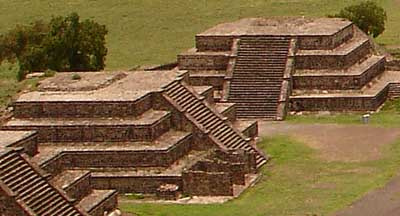

talud-tablero

Estilo de construcción (ing. slope-platform) típica en las pirámides de Teotihuacán (y en otras ciudades después). Consiste en la combinación de plataformas sucesivamente más pequeñas para conseguir el efecto de una pendiente. En algunos estilos particulares, la plataforma puede proyectarse más allá de las caras frontales de cada “escalón”, las cuales pueden estar también ligeramente inclinadas.